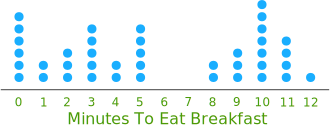

Showing the Results of a Survey
So you have just Conducted a Survey and want to
show your results
in the best possible way?
Here are some suggestions:
Tables
Sometimes, you can simply report the information in a table.
A table is a very simple way to show others the results. A table should have a title, so those looking at it understand what it shows:
| Table: The Favorite Colors of My Class | ||||
| Yellow | Red | Blue | Green | Pink |
|---|---|---|---|---|
| 4 | 5 | 6 | 1 | 4 |
Statistics
You can also summarize the results using statistics, such as Mean, Median, Mode, Standard Deviation and Quartiles
Example: you have lots of information about how long it takes people to get to school but it may be simpler just to present a summary such as:
Shortest Journey: 3 minutes
Average Journey: 22 minutes
Longest Journey: 58 minutes
Graphs
But nothing makes a report look better than a nice graph or chart
There are many different types of graphs. Three of the most common are:



You can create graphs like those using our Data Graphs (Bar, Line, Pie and Dot) page
People's Comments
If people have given their opinions or comments in the survey, you can present the more interesting ones:
Example: In response to the question "How can we best clean up the river?" we received these interesting replies:
- "The government has a special fund for this"
- "The local gardening group has seedlings you could plant"
Report
Put it all together into a report, with a nice introduction, and conclusions at the end, and you are done!